După ce ați lucrat cu baza de date, este posibil să descoperiți că trebuie să faceți unele modificări la tabelele care stochează datele dvs. Access facilitează modificarea tabelelor pentru a se potrivi nevoilor bazei de date.
În această lecție, veți învăța cum să creați și să rearanjați câmpurile de tabel. Veți învăța, de asemenea, cum să vă asigurați că datele din tabel sunt formatate corect și consecvent, setând reguli de validare, limite de caractere și tipuri de date în câmpurile dvs. În cele din urmă, vă vom direcționa către opțiuni suplimentare pentru a efectua funcții matematice simple în tabelele dvs.
Modificarea tabelelorPe lângă modificările de bază ale tabelelor, cum ar fi adăugarea și mutarea câmpurilor, puteți face modificări mai avansate care vă permit să setați reguli pentru datele dvs. Toate aceste modificări vă pot ajuta să vă faceți tabelele și mai utile.
Adăugarea și rearanjarea câmpurilorAccesul facilitează rearanjarea câmpurilor existente și adăugarea altora noi. Când adăugați un câmp nou, puteți chiar să setați tipul de date, care dictează ce tip de date pot fi introduse în acel câmp.
Există mai multe tipuri de câmpuri pe care le puteți adăuga la un tabel:
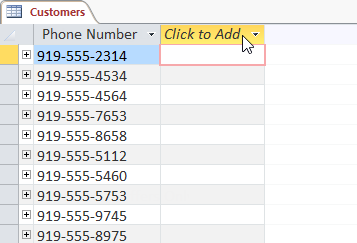
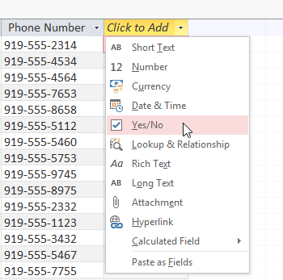
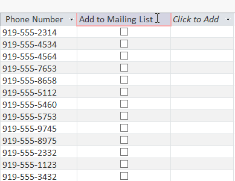
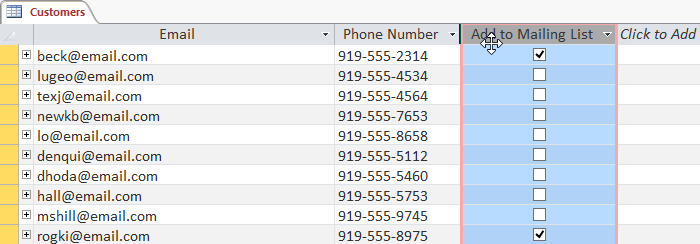
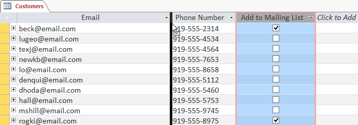
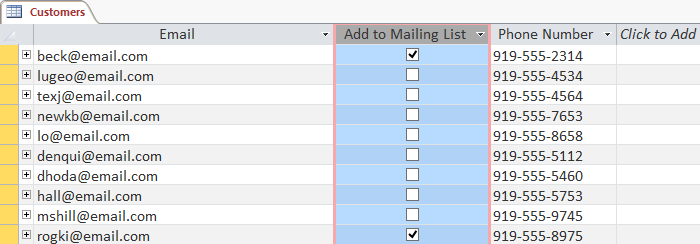
Pe pagina anterioară, ați aflat despre setarea tipului de date pentru câmpurile noi. Când setați tipul de date de câmp, setați într-adevăr o regulă pentru acel câmp. Bazele de date includ adesea reguli, deoarece ajută la asigurarea ca utilizatorii să introducă tipul corect de date.
De ce este acest lucru important? Calculatoarele nu sunt la fel de inteligente ca oamenii cu privire la anumite lucruri. Deși s-ar putea să recunoașteți că doi și 2 sau NC și Carolina de Nord sunt același lucru, Access nu va grupa aceste lucruri și, prin urmare, nu va grupa împreună. Asigurați-vă că introduceți datele într-un format standard vă va ajuta să le organizați, să le numărați și să le înțelegeți mai bine.
Regulile pot determina, de asemenea, ce opțiuni aveți pentru a lucra cu datele dvs. De exemplu, puteți face calcule numai cu datele introduse în câmpurile de număr sau valută și puteți formata doar textul introdus în câmpurile de text.
Există trei tipuri principale de reguli pe care le puteți seta pentru un câmp: tip de date, limită de caractere și reguli de validare.
Pentru a schimba tipul de date pentru câmpurile existente: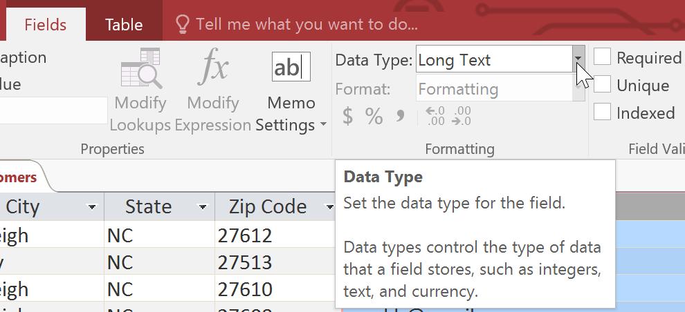
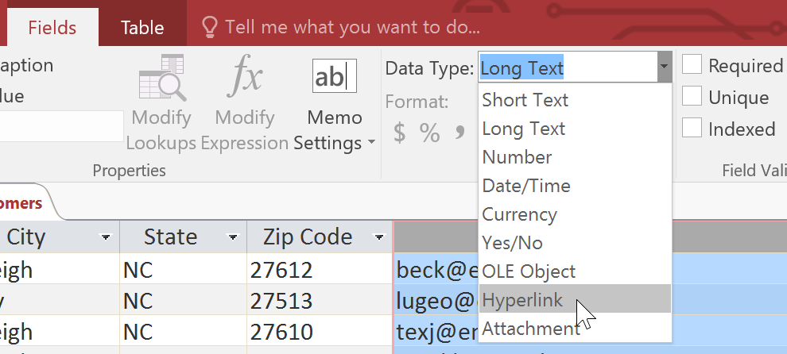
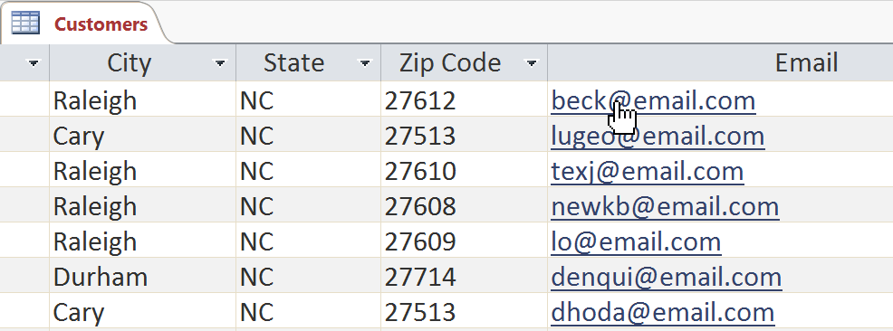
Setarea limitei de caractere pentru un câmp stabilește o regulă cu privire la câte caractere - litere, cifre, semne de punctuație și chiar spații - pot fi introduse în acel câmp. Acest lucru vă poate ajuta să păstrați datele din înregistrările dvs. concise și chiar să forțați utilizatorii să introducă datele într-un anumit mod.
În exemplul de mai jos, un utilizator introduce înregistrări care includ adrese. Dacă setați limita de caractere în câmpul State la 2 , utilizatorii pot introduce doar două caractere de informații. Aceasta înseamnă că trebuie să introducă abrevieri poștale pentru state în loc de numele complet - aici, NC în loc de Carolina de Nord. Rețineți că puteți seta o limită de caractere numai pentru câmpurile definite ca text.
Pentru a seta o limită de caractere pentru un câmp: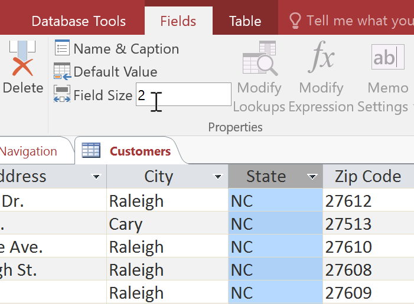
O regulă de validare este o regulă care dictează ce informații pot fi introduse într-un câmp. Când există o regulă de validare, este imposibil pentru un utilizator să introducă date care încalcă regula. De exemplu, dacă le-am cere utilizatorilor să introducă un nume de stat într-un tabel cu informații de contact, a m putea crea o regulă care să limiteze răspunsurile valide la codurile poștale ale statelor din SUA. Acest lucru ar împiedica utilizatorii să tasteze ceva care nu era de fapt un cod poștal real.
În exemplul de mai jos, vom aplica această regulă tabelului nostru Clienți. Este o regulă de validare destul de simplă. Vom numi doar toate răspunsurile valide pe care le-ar putea introduce un utilizator, ceea ce va însemna că utilizatorii nu pot introduce nimic altceva în înregistrare. Cu toate acestea, este posibil să se creeze reguli de validare care sunt mult mai complexe.
Pentru a crea o regulă de validare: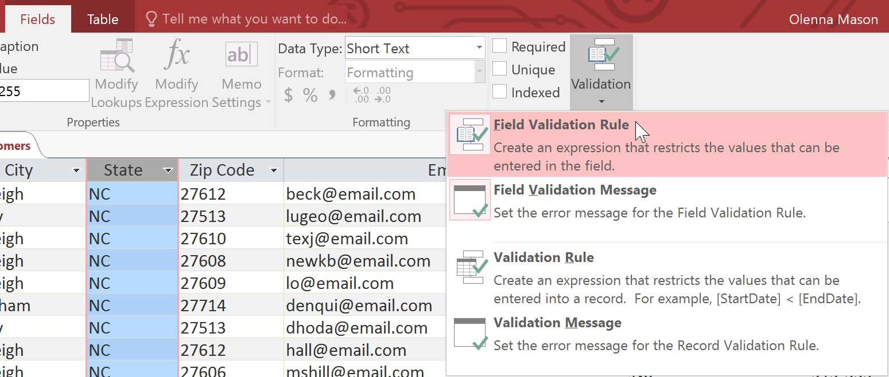
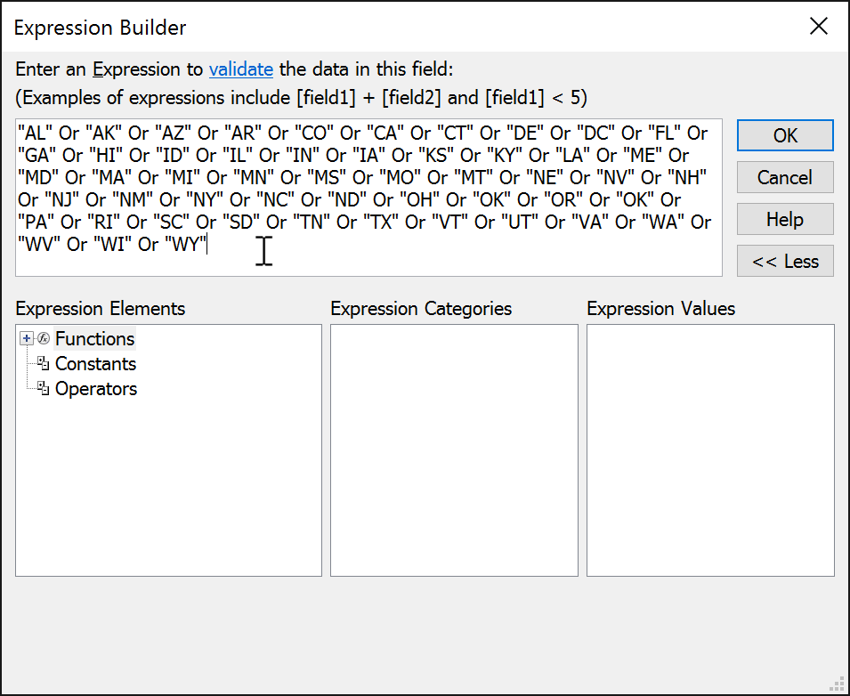
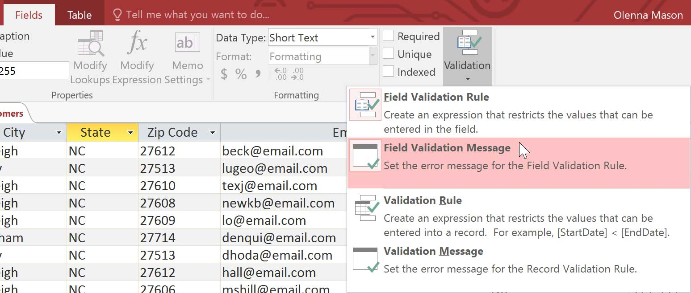
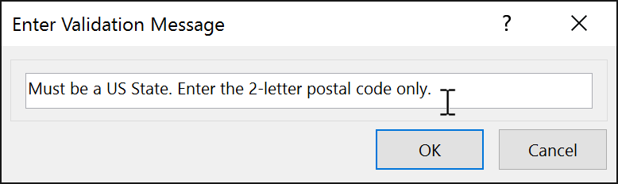
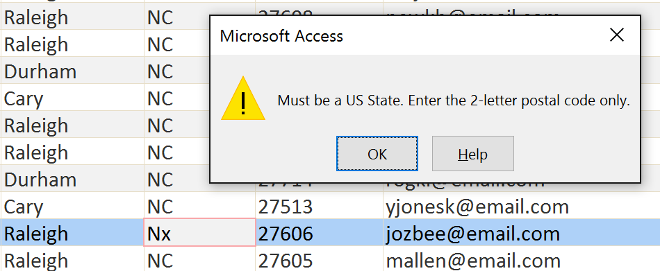